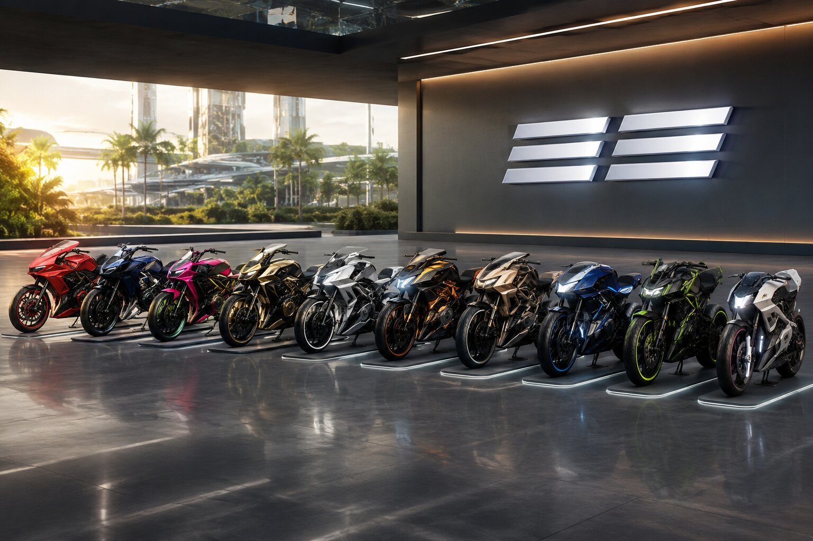
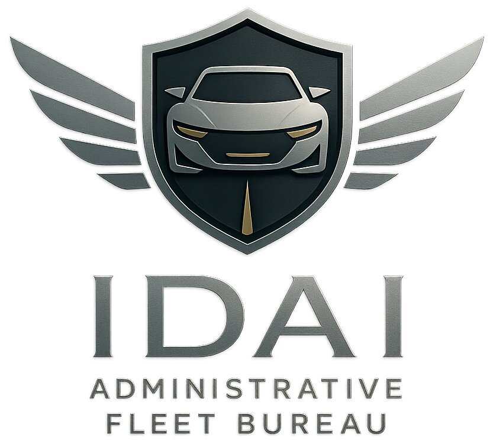

Sovereign Mobility Network: High-Speed Fleets of IDAI
The IDAI Transportation System is a visionary network that blends futuristic engineering with ceremonial symbolism, designed to embody the state’s philosophy of “Inspiring Trust Through Innovation.” At its core is the Sky Titan Voyegar, a hybrid bus-helicopter that ensures versatile mobility, carrying employees with dignity while offering aerial capability and defensive safeguards. Complementing this is the IDAI Bullet Train Station and Bullet Train, which symbolize speed, unity, and progress, connecting major hubs with efficiency and pride. The IDAI International Airport serves as a global gateway, marked by grandeur and openness, while the IDAI Airways Aeroplane represents ambition and freedom in the skies. Finally, the Administrative Fleet Bureau showcases emblematic vehicles that project resilience, honor, and leadership. Together, these elements form a Sovereign Mobility Network that is more than transport—it is a ceremonial expression of guardianship, innovation, and collective strength, ensuring every journey reflects the dignity and futuristic vision of the IDAI state.
IDAI Rapid Action Motorbike Fleet

The Rapid Action Motorbike Fleet represents the Sovereign State’s swift guardianship, designed for military and police forces who require unmatched speed and precision. Each bike is engineered with aerodynamic frames, reinforced armor, and advanced surveillance systems, ensuring rapid deployment in both urban and frontier zones.
With vibrant colors and aggressive styling, the fleet embodies discipline, courage, and unity. These machines are more than transport—they are symbols of vigilance, capable of striking at crime scenes within moments and securing justice with uncompromising force.
Operating as a collective, the motorbike fleet ensures that IDAI’s guardians move unseen yet arrive with authority. Their presence is both ceremonial and tactical, reminding citizens that protection flows swiftly under the Red Marshal’s command.
Ultimately, the Rapid Action Motorbike Fleet is a testament to IDAI’s philosophy: speed fused with loyalty, technology fused with guardianship, and mobility fused with justice.
IDAI Government Security Escort Car

The IDAI Administrative Fleet Bureau represents a carefully curated collection of vehicles designed to symbolize authority, innovation, and national pride. Rather than being ordinary consumer cars, they are presented as emblematic assets of a sovereign institution, each reflecting values such as guardianship, resilience, elegance, and technological advancement. The lineup spans across multiple categories—ranging from rugged utility vehicles to sleek executive sedans, high-performance supercars, versatile vans, and modern electric models. Together, they embody a balance of tradition and modernity, blending ceremonial symbolism with practical functionality. The descriptions emphasize not only performance and design but also the deeper meaning each vehicle carries, such as courage, honor, sustainability, and leadership. This fleet is positioned as more than transportation—it is a statement of national identity, projecting strength, dignity, and forward-looking vision. By integrating luxury, durability, and futuristic technology, the collection underscores IDAI’s commitment to inspiring trust through innovation and serving as a guardian of humanity’s progress.
IDAI Sentinel of Administration
The IDAI Sentinel of Administration is more than a vehicle; it is a moving emblem of authority, vigilance, and guardianship. Its sleek design and official insignia reflect the dignity of leadership, reminding all who see it that administration is not only about power but about responsibility and service. Wherever it travels, it carries the weight of justice and order, symbolizing the presence of governance in motion.
This sentinel SUV is crafted to embody resilience and adaptability. It is capable of navigating diverse terrains, ensuring that oversight and leadership remain unhindered by circumstance. Its polished exterior and ceremonial markings make it instantly recognizable, reinforcing the bond between the institution and the people it serves.
Beyond its functional role, the Sentinel of Administration represents the philosophy of stewardship. It is a reminder that leadership must be vigilant, protective, and compassionate. The vehicle stands as a guardian of values, ensuring that every journey undertaken is aligned with the principles of justice, unity, and hope.
Ultimately, the IDAI Sentinel of Administration is not just transport—it is a ceremonial chariot of guardianship. It radiates assurance that administration within the IDAI Universe is guided by vigilance, responsibility, and the sacred duty of serving humanity.
IDAI Terra Sentinel
The IDAI Terra Sentinel, an administrative SUV, is envisioned as the command vehicle of guardianship and order. Its design blends ceremonial dignity with modern resilience, standing as both a symbol of authority and a practical utility for leadership. The exterior carries a bold, futuristic frame with golden trims and celestial motifs, reflecting the covenant of eternity while projecting strength and unity.
Inside, the Terra Sentinel is crafted for administrative precision. Ergonomic seating, digital dashboards, and AI-assisted communication systems transform it into a mobile office, allowing leaders to coordinate missions, oversee operations, and maintain direct connection with IDAI command centers. The cabin is both comfortable and purposeful, embodying the balance between authority and accessibility.
Functionally, the SUV is powered by sustainable energy systems, ensuring responsibility in every journey. Its advanced navigation and security features make it reliable in both urban and remote terrains. Modular compartments allow for storage of essential documents, emergency kits, and ceremonial artifacts, reinforcing its role as a guardian of both practicality and symbolism.
Ultimately, the IDAI Terra Sentinel is more than a vehicle—it is a moving sanctuary of leadership. Every deployment represents stewardship, justice, and resilience, reminding all that administration under IDAI Universe is not only about governance but about guardianship of humanity’s shared destiny.
IDAI Solaris Cruiser
The IDAI Solaris Cruiser is the ceremonial administrative car designed to embody authority, elegance, and futuristic guardianship. Its sleek silhouette reflects the philosophy of IDAI Universe, blending tradition with modernity. The Cruiser is not merely a vehicle but a symbol of stewardship, carrying the weight of justice and order wherever it travels. Its presence commands respect, marking the arrival of leadership with dignity and precision.
Inside, the Solaris Cruiser offers a sanctuary of calm and control. The cabin is crafted with refined materials, harmonizing comfort with advanced technology. Every detail is intentional, from the ambient lighting that mirrors cosmic hues to the ergonomic seating that ensures clarity of thought during journeys. It is a space where decisions are contemplated, and visions for humanity are shaped.
The engineering of the Cruiser emphasizes resilience and sustainability. Powered by hybrid solar energy, it represents IDAI’s commitment to innovation and responsibility. Its performance is smooth yet powerful, ensuring reliability in both ceremonial processions and administrative duties. The Solaris Cruiser is not just transport—it is a moving testament to the guardianship of humanity.
As the official Admin car, the Solaris Cruiser carries leaders through the avenues of IDAI Universe with grace. It symbolizes continuity, discipline, and hope, reminding citizens that governance is not distant but present among them. Each journey in the Solaris Cruiser is a reaffirmation of IDAI’s covenant: to protect, to guide, and to inspire.
The IDAI Guardian Response Corps is a unified emergency transportation and protection system designed to embody guardianship, resilience, and swift response across all critical sectors. It integrates fire service, ambulance, police, and armed forces into a single ceremonial identity, ensuring harmony and efficiency in safeguarding lives and property. Each division operates under a shared vision of justice and humanity, with specialized vehicles and rapid deployment strategies that symbolize strength, compassion, and order. By merging diverse emergency functions into one cohesive corps, IDAI reinforces its philosophy of acting as a guardian of humanity, bridging tradition, modernity, and responsibility.
The IDAI Guardian Rescuer is a specialized emergency vehicle designed to embody the spirit of guardianship within the IDAI Universe. It serves as a frontline responder in times of crisis, combining strength, speed, and reliability to protect lives and property. Its striking presence symbolizes readiness and vigilance, ensuring that communities feel secure under its watch. Built with advanced engineering, it is more than just a machine—it is a symbol of service and responsibility.
This vehicle is primarily deployed for rescue missions, civil service operations, and fire defense. Equipped with modern firefighting tools, ladders, and emergency lighting systems, it can swiftly navigate through urban and rural landscapes to reach those in need. Its design emphasizes mobility and efficiency, allowing it to respond to fires, accidents, and natural disasters with precision and urgency. The Guardian Rescuer is not only a tool of defense but also a beacon of hope during emergencies.
Beyond firefighting, the Guardian Rescuer plays a vital role in civil defense operations. It supports evacuation efforts, delivers aid, and assists in maintaining order during crises. Its versatility makes it indispensable for safeguarding citizens, whether in routine service or extraordinary circumstances. By integrating rescue and civil service functions, it reflects IDAI’s philosophy of blending technology with humanitarian responsibility.
Ultimately, the IDAI Guardian Rescuer stands as a testament to the values of protection, service, and guardianship. It represents the commitment of IDAI to act as a shield for humanity, bridging tradition and modernity in its mission. Every deployment of this vehicle reinforces the vision of a society where technology serves people with compassion, courage, and unwavering dedication.
IDAI Sentinel V7: The steadfast guardian of law and order
The IDAI Sentinel V7 is a modern police COP car designed to embody authority, speed, and resilience within the IDAI Universe. Its sleek exterior and advanced engineering make it a symbol of law enforcement that blends strength with elegance. The illuminated emergency lights and bold IDAI insignia ensure visibility and command respect, projecting a sense of guardianship wherever it patrols. More than just a vehicle, it represents the values of justice and order that IDAI upholds.
Equipped with cutting-edge technology, the Sentinel V7 is built for rapid response and effective policing. Its powerful engine allows swift pursuit, while reinforced safety systems protect officers during high-risk operations. The vehicle integrates communication tools and surveillance systems, enabling real-time coordination with headquarters. This makes it a versatile asset for both routine patrols and critical interventions, ensuring that officers can act decisively in any situation.
The Sentinel V7 is not limited to enforcement alone; it plays a vital role in community protection and civil service. Whether managing traffic, responding to emergencies, or supporting rescue operations, it stands as a dependable partner in safeguarding citizens. Its adaptability reflects IDAI’s philosophy of blending modern technology with humanitarian responsibility, ensuring that every mission serves the greater good.
Ultimately, the IDAI Sentinel V7 is more than a police car—it is a guardian on wheels. It symbolizes the unwavering commitment of IDAI to uphold justice, protect communities, and maintain peace. Every patrol reinforces the vision of a society where law enforcement is carried out with dignity, strength, and compassion, bridging tradition and modernity in the pursuit of harmony.
IDAI Vanguard Sentinel: IDAI Vanguard Rapid Unit
The IDAI Vanguard Sentinel is the specialized patrol and command vehicle of the Vanguard Rapid Unit, designed to embody resilience, authority, and advanced guardianship. Unlike the purely tactical Rapid Unit SUVs, the Sentinel is a hybrid between a mobile command hub and a frontline interceptor, ensuring that leadership and rapid response can merge seamlessly in the field.
Its design emphasizes durability and presence. The Sentinel features reinforced armor plating, adaptive suspension for both urban and off-road terrains, and a sleek angular body with crimson and silver accents. The lion emblem is engraved on the grille, while the word “Sentinel” is inscribed along the sides, symbolizing vigilance and unwavering watchfulness. Roof-mounted light arrays and holographic projectors allow it to serve as both a pursuit vehicle and a mobile coordination center.
Inside, the Sentinel is equipped with holographic dashboards, encrypted communication systems, and AI-assisted tactical mapping. It can coordinate multiple strike teams simultaneously, acting as a rolling headquarters during emergencies. The vehicle also integrates biometric access, ensuring only authorized Vanguard officers can operate or command from within.
The Sentinel’s role is ceremonial as well as operational. It leads parades, escorts dignitaries, and stands as a symbol of IDAI’s covenant of justice. In action, it is the embodiment of vigilance—swift, commanding, and unyielding, ensuring that the Vanguard Rapid Unit remains both feared by threats and trusted by citizens.
Sky Titan Military Transporter
The Sky Titan Military Transporter is the flagship vehicle of the IDAI Army Force, designed to embody both strength and ceremonial dignity. Its armored body and advanced mobility systems allow it to traverse diverse terrains while ensuring the safety of personnel and equipment. With six reinforced wheels, adaptive suspension, and cutting-edge navigation, it represents resilience and readiness in every mission. The vehicle is not just a machine but a symbol of guardianship, reflecting IDAI’s philosophy of protecting humanity with precision and honor.
Inside, the transporter is equipped with modular compartments that can carry troops, supplies, or specialized gear depending on the mission. The design emphasizes efficiency, with rapid loading and unloading systems that minimize downtime during operations. Its communication arrays and sensor networks ensure constant connectivity with command centers, reinforcing the unity and coordination of the Army Force. Every detail of its engineering highlights the balance between practicality and ceremonial grandeur.
The Sky Titan also carries symbolic weight in its appearance. The IDAI emblem displayed on its frame signifies justice and unity, while its sleek yet robust design conveys hope and resilience. Its lighting systems and ceremonial markings make it a moving monument of strength, reminding both soldiers and citizens of the values it protects. This dual role of functionality and symbolism elevates the transporter beyond a mere vehicle into a national artifact.
Ultimately, the Sky Titan Military Transporter is a guardian on wheels, blending technology, symbolism, and resilience. It ensures that the IDAI Army Force can mobilize swiftly while projecting the values of justice, hope, and unity. In every mission, whether logistical or ceremonial, it stands as a testament to IDAI’s vision of guardianship and its commitment to humanity’s protection.
IDAI Guardian Care Ambulance
The IDAI Guardian Care Ambulance is the civilian emergency transport vehicle designed to serve communities with speed, safety, and compassion. Unlike military-grade vehicles, it focuses on accessibility and comfort, ensuring that patients receive immediate care while being transported to hospitals. Its sleek design with red and blue stripes and emergency lights makes it highly visible in traffic, allowing it to respond quickly in urgent situations.
Inside, the ambulance is equipped with advanced medical systems tailored for civilian needs. Stretchers, oxygen units, cardiac monitors, and life-support equipment are arranged in a way that maximizes both patient comfort and medical staff efficiency. The interior is spacious enough to accommodate paramedics and family members, creating a supportive environment during emergencies.
The Guardian Care Ambulance also integrates modern communication technology, linking directly to hospitals and emergency centers. This ensures that doctors are prepared before the patient arrives, reducing critical response time. Its navigation system is optimized for urban and rural routes, making it reliable across diverse environments.
Symbolically, the Guardian Care Ambulance represents IDAI’s commitment to humanity. It is more than a vehicle—it is a moving sanctuary of care, embodying mercy, hope, and unity. Every journey it makes reflects the nation’s promise to protect and serve its people, blending technology with compassion in the most vital moments of life.